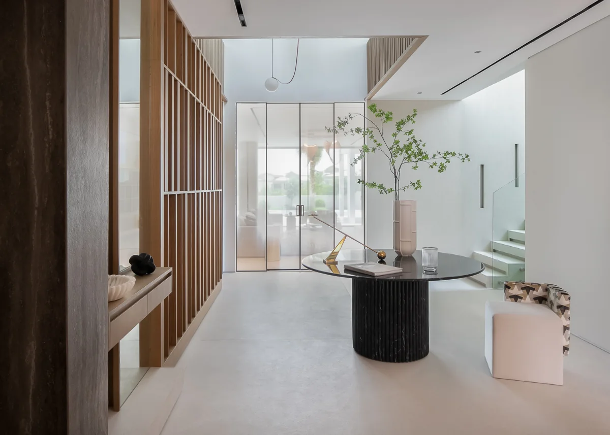
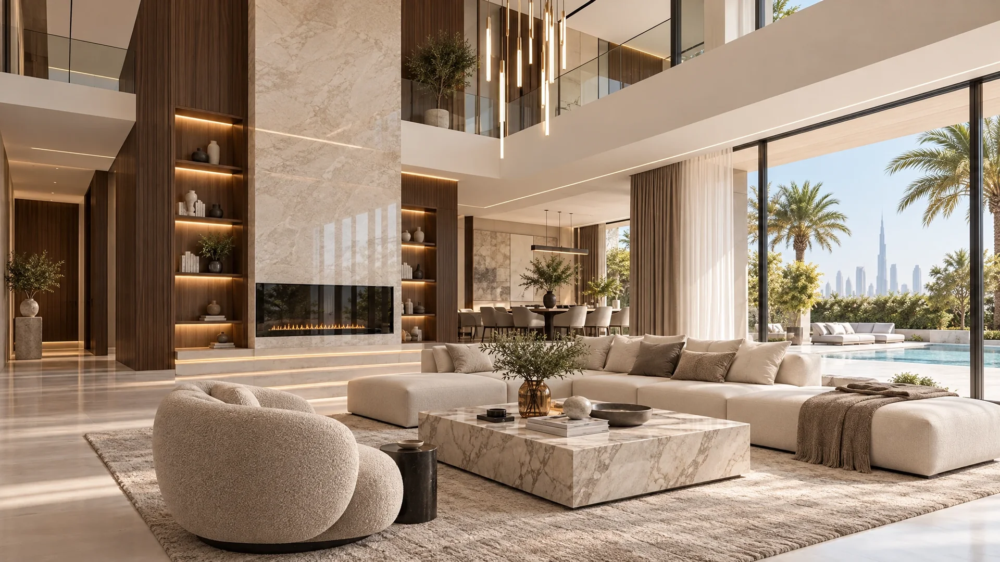
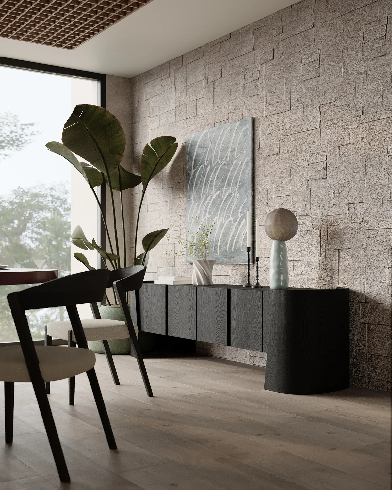
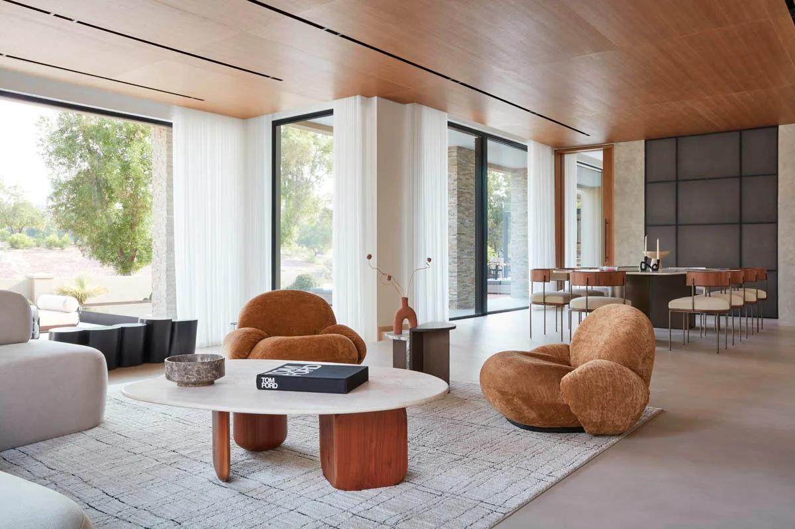
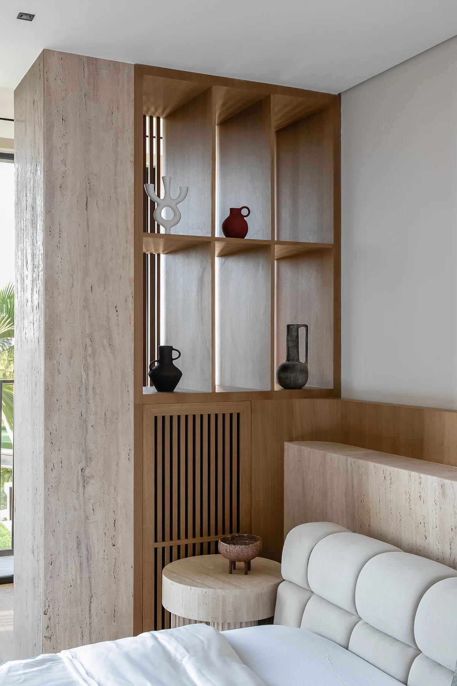
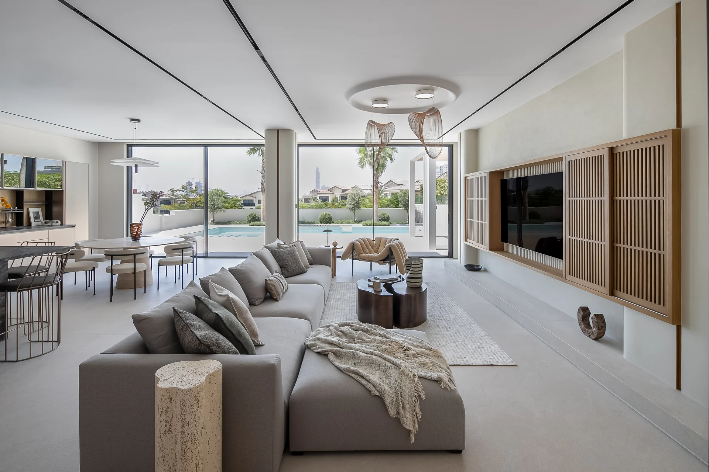
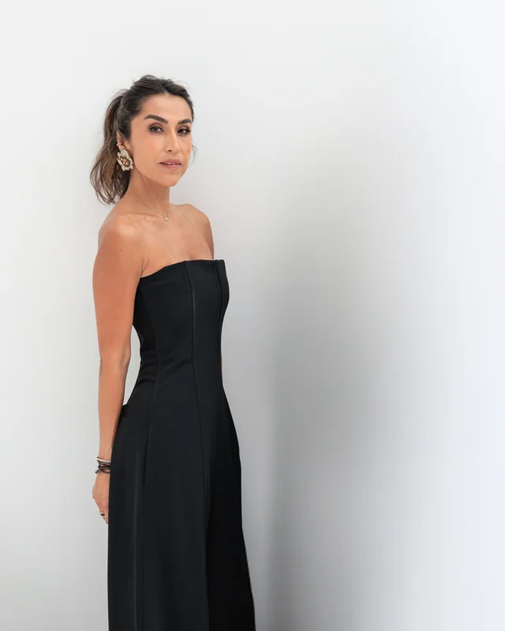

Custom-designed furniture, distinctive lighting and carefully crafted interiors.

C’est ici Design · Residential interiors
Interior architecture, bespoke furniture and considered finishes.
A personal approach to your Dubai villa.
People first.
Design with intention.
ROOTED IN DUBAIWorking internationally
C’est ici Design provides villa interior design in Dubai, from spatial planning and interior architecture to bespoke furniture, materials, procurement and styling. Founded by Monica Arango, our studio shapes each project around your home, your priorities and the way you live.
We begin with the way you live: the quiet morning rituals, the people you welcome, the things you want to keep. Then we shape the spaces, materials and details around you. A home with character. A home with soul.
Real projects from our portfolio.
Each with a story of its own.

Custom-designed furniture, distinctive lighting and carefully crafted interiors.

Natural textures and connected spaces, layered around the people who call it home.

Japandi simplicity meets the warmth of the desert. An exploration of clean lines, organic textures and understated character.
Explore the project
Emotional minimalism is at the heart of our design language: thoughtful proportions, sculptural forms and honest materials, balanced with the individuality of the people who live there.
We consider the flow between living spaces, privacy and connection, furniture layouts and the way light moves through your home. Spatial planning and interior architecture create the foundation for everything that follows.
Finishes, colour, lighting and texture are developed together. In a Dubai villa, we consider daylight, everyday wear, comfort and maintenance alongside the visual character of the space.
Bespoke furniture and joinery sit alongside curated furniture, fixtures and equipment — often called FF&E. We work with makers and suppliers to develop pieces that belong to the architecture and your way of living.
Explore bespoke designArt, objects, accessories and styling bring the scheme into focus. We consider what you already own and value, so the finished home carries your story as well as a coherent design direction.

Spaces to gather. Spaces to retreat.
And a thoughtful connection between the two.
Our villa design process brings architecture, interiors and delivery into one conversation. The precise scope is agreed around your project.
We understand your brief, site, lifestyle, priorities and investment parameters. Together, we define what the project needs to achieve.
Brief · Site analysis · ScopeA design narrative takes shape through spatial ideas, preliminary layouts, mood and material direction.
Concept · Layouts · Material paletteWe refine the design through detailed layouts, renders, lighting, finishes, bespoke pieces and technical coordination.
Detailed design · VisualisationsDrawing packages, schedules and specifications translate the approved direction into information for pricing and delivery.
Drawings · Specifications · Tender supportWithin the agreed scope, we coordinate furniture sourcing, suppliers, production and logistics with the project team.
Procurement · Supplier coordinationFinal placement, art, accessories and styling bring the rooms together, ready for the next chapter of your life.
Installation · Styling · Handover
Founded by Monica Arango, C’est ici brings together interior architecture, design and craftsmanship with a people-first philosophy.
Our Dubai studio works closely with clients, artisans and collaborators. Different perspectives, held together by a shared ambition: to create spaces with meaning.
Meet Monica & the studioA few things you may be wondering about villa interior design in Dubai.
Ask us something elseOur services can include discovery and spatial planning, concept design, design development, documentation, bespoke furniture, FF&E sourcing, procurement coordination, installation and styling. We agree the exact deliverables and responsibilities in a project-specific proposal.
We can discuss how an existing home could be reconfigured, furnished or refreshed. We first review the property, the changes you want to make and any site constraints. Structural work, approvals and contractor responsibilities need to be assessed and agreed for the specific project.
Fees and overall investment depend on the villa’s size and condition, the design scope, the level of bespoke work and the furniture and finishes selected. Share your floor plans, priorities and an indicative budget so we can discuss an appropriate scope. Design fees, works and procurement allowances should be considered separately.
The programme depends on the scope, decision-making, technical coordination, approvals and supplier lead times. We establish a project-specific sequence during discovery and refine it as the design and procurement requirements become clear.
Yes. Bespoke design is part of our practice. We develop furniture and interior elements in collaboration with local and international makers and suppliers, coordinating materials, proportions and details with the wider interior scheme.
Our design process includes technical coordination and collaboration with the wider project team. The appointment should clearly define who is responsible for architecture, engineering, authority approvals, construction, procurement and site supervision.
Your villa’s location, available floor plans or photographs, the spaces you want to address, your intended timing and a broad investment range are useful starting points. Bring ideas, references and anything you want your home to feel like — or feel less like.
A villa to reimagine. A home to make your own.
We’d love to hear your story.